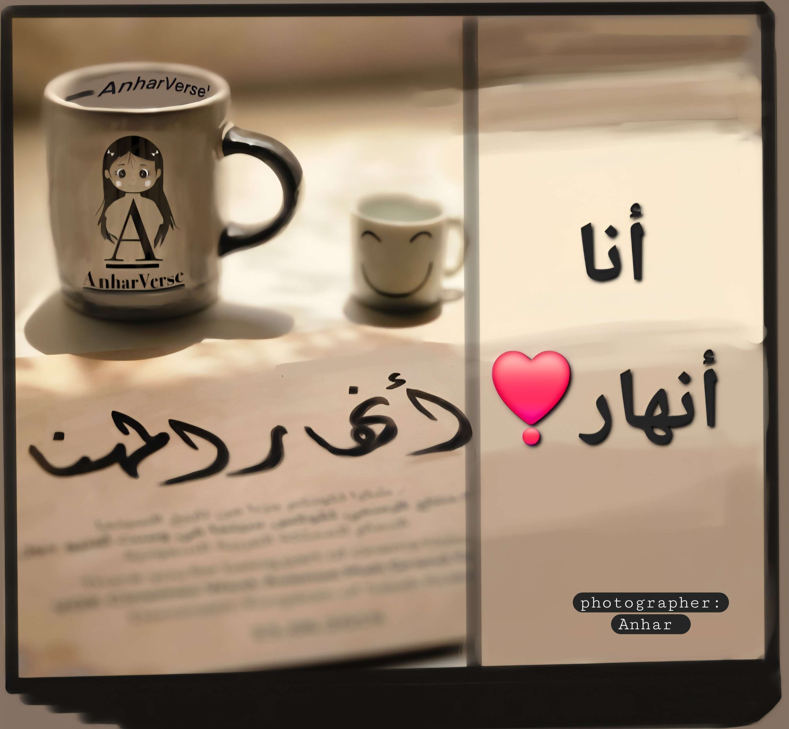

عن أنهار

تشكّلت رؤيتي عبر رحلة طويلة من التجربة والاستكشاف. قادني الإيمان إلى الوعي… لأمنح كل شيءٍ هوية عبر الفهم والتجربة.
تخصصت في اللغة الإنجليزية، ومع ذلك كان اهتمامي في مسارات إنسانية أكثر عمقًا: التعليم والتربية، منظور وعي الإنسان قبل المنهج، والطلبة قبل التقييم.
إلى جانب التعليم… خضت تجربة ريادة الأعمال من خلال أفكار ومشاريع حقيقية. بدأت من الإيمان بالفكرة، ومحاولة تحويلها إلى واقع، ثم التوقف أحيانًا لإعادة الفهم والتعلّم.
لكن ريادة الأعمال بالنسبة لي ليست "سعياً للنتائج"، بل رحلة لفهم أعمق:
كيف تولد الفكرة؟
وكيف تنضج؟
وكيف قد لا تكتمل…؟!
لكنها تترك وعياً لا يضيع.
من هذه التجارب وُلد عالم أنهار — AnharVerse — وتشكّلت شخصيتا نهيرة وآنا، كامتداد لتعدد المهارات والتجارب الإنسانية، فهما جانبين لرحلة واحدة… ما زالت تُكتب.
نهيرة وآنا هما جزء من هذه الرحلة.
هما انعكاس لتعدد التجربة بداخلي.
أما القصة… فما زالت تُكتب.
لماذا عالم أنهار؟

لأن الأنهار لا تُسرع لتصل،
بل تمضي بهدوءٍ في مسارها الطبيعي،
تتشكل ملامحها من الطريق،
وتجمع في مجراها الحياة والمعنى والتجربة.
وهكذا هو عالم أنهار —
رحلةٌ هادئة بين الفكرة والوعي،
يتحوّل فيها الإبداع إلى وسيلةٍ للفهم،
والتعليم إلى طريقٍ لاكتشاف الذات.
إنه عالمٌ يمضي باتزانٍ يشبه الحكمة،
ويؤمن أن الأثر الحقيقي لا يُصنع بالعجلة،
بل بالصدق، والنية، والوعي الذي يوجّه كل فكرةٍ نحو غايتها.
عالم أنهار | يُمنع إعادة نشر أو اقتباس النصوص والصور دون إذن مسبق ©2025